20260606金桂，丹桂
原始对话记录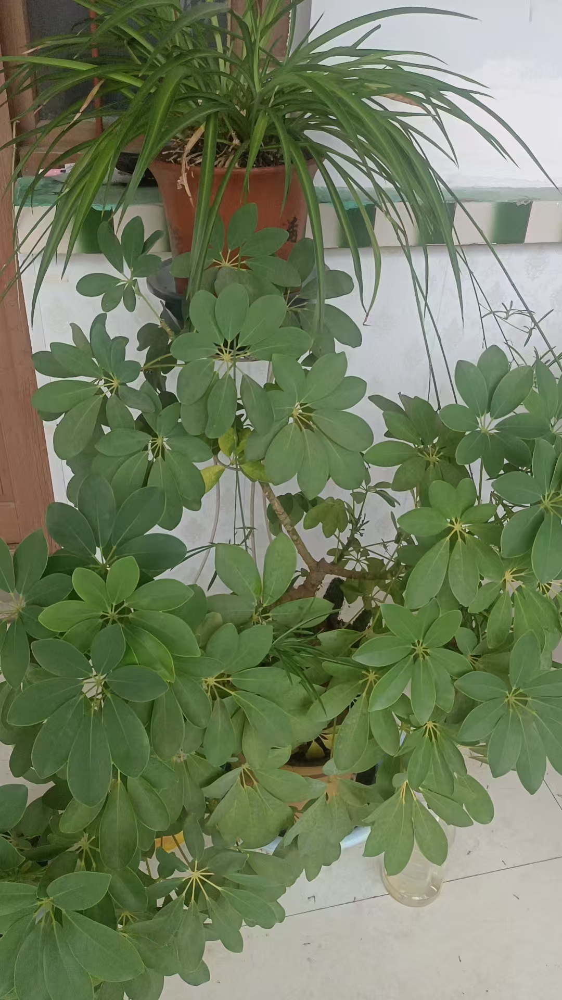
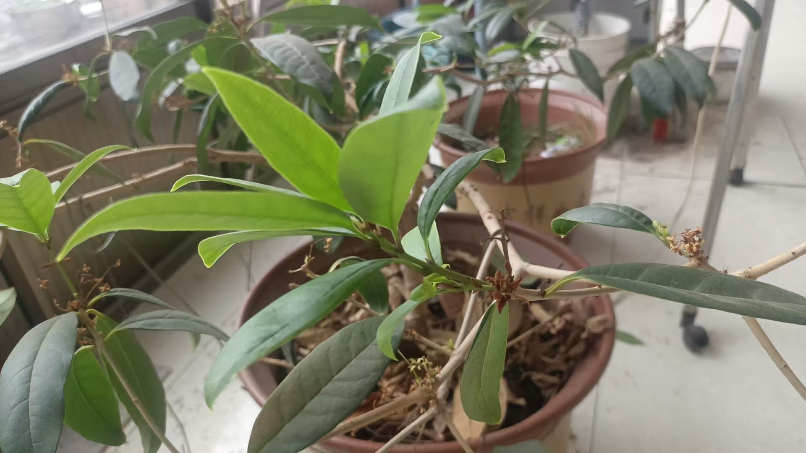
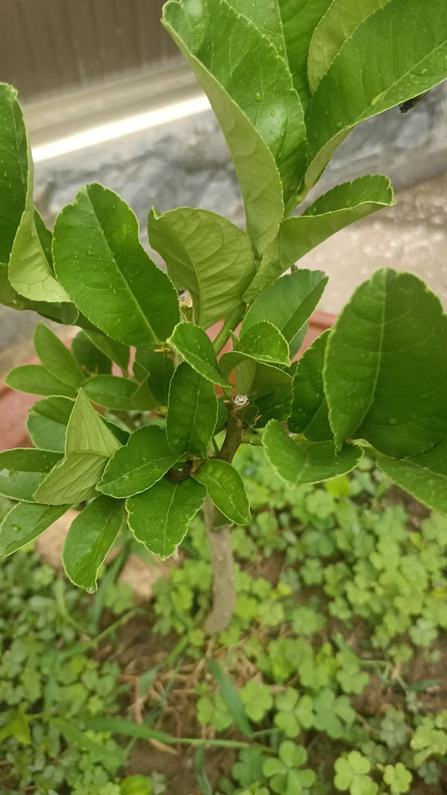
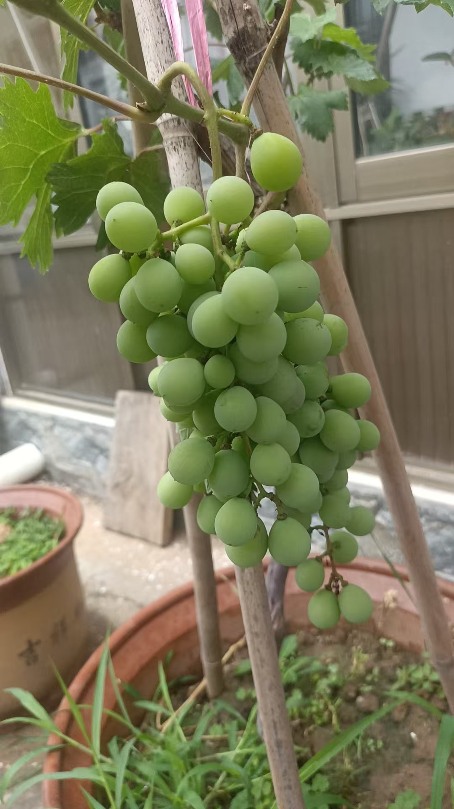
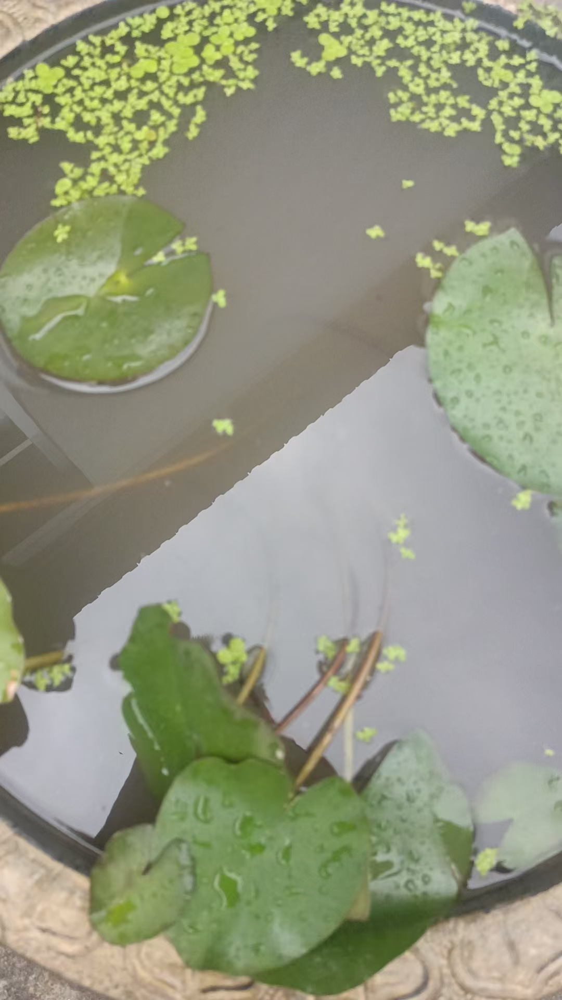
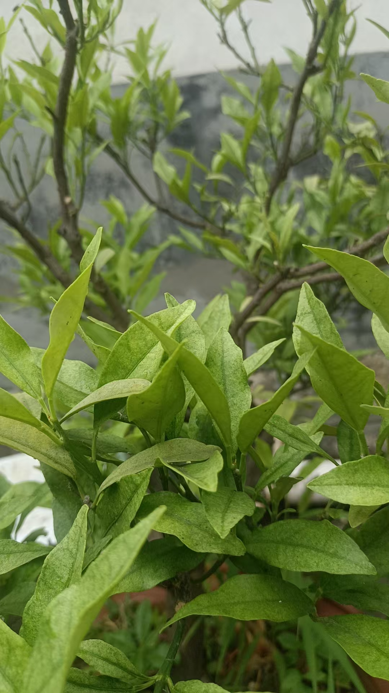
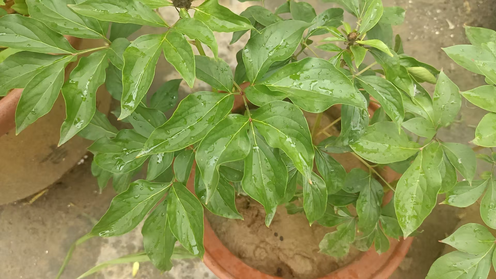
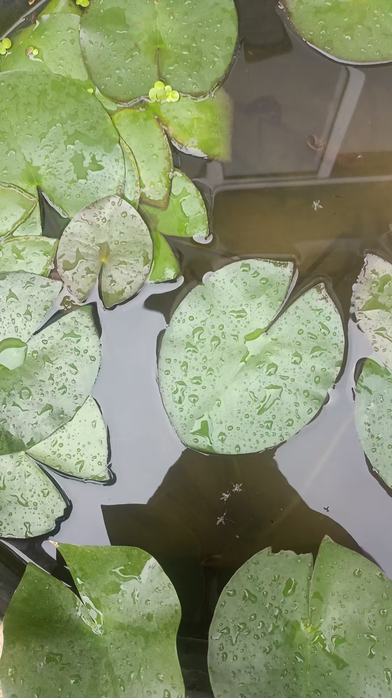
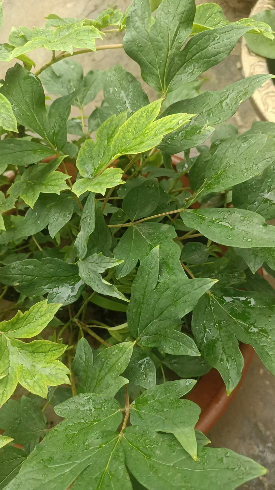
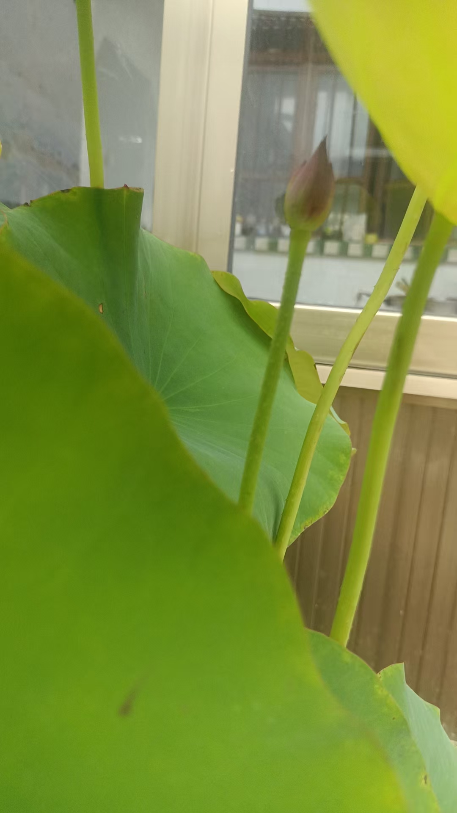
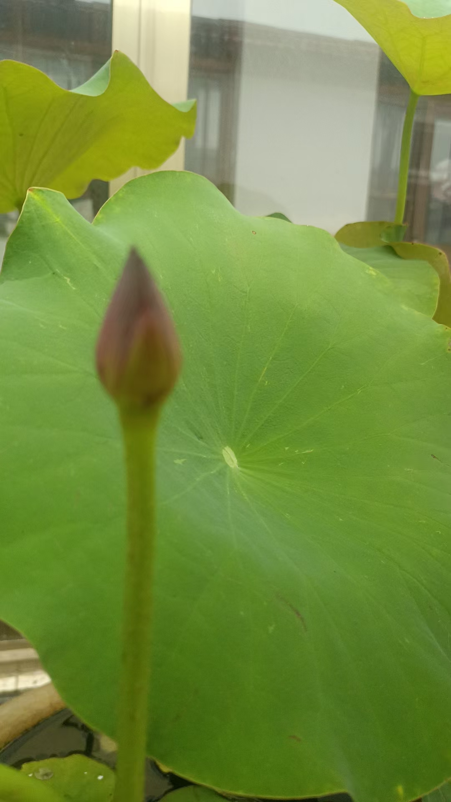
荷花，芙蕖，芍药，牡丹
金桂，丹桂
以下为编者整理的主题文章
编者整理 · 主题文章
金桂，丹桂，报一遍花名
导读：这篇记录几乎全是照片，正文只留下两行花名。荷花、芙蕖、芍药、牡丹一行，金桂、丹桂一行。像是对着一园子的花，一样一样，把名字报出来。
这一页的文字很少。
"荷花，芙蕖，芍药，牡丹。" 换一行，"金桂，丹桂。" 前后十几张照片，全在这两行底下。
按名字数，金桂和丹桂是桂花的两种。金桂的花偏黄，丹桂偏橙红。都是秋天开，香。
照片里的花我没法一一去描。能说的只是，有人隔一阵就把家里种的花报一遍名字。荷花、芙蕖是夏天；芍药、牡丹是春天；桂是秋。报完，就不再说什么。
这件事他没解释，也看不出有什么要紧。院子里的东西，开一朵，谢一朵，他都记着名字。
站内另一页叫《红花佛手 吃起来很脆》，那次的桂花也开了，底下有人感叹"花也太多了吧，叶几片，花那么多"。那个人回了一句：叶子跟果子都香。桂花是香的，佛手也是香的。他这么种着，一年里总有几样在发香。
再一页《荷花芙蕖开，一花一世界》里，他越过桂花、葡萄去看新栽的荷花，说三个桶里的长势更好，只是还没有花苞。花没开的时候，他也照样浇水，照样报名字。
金桂，丹桂。就四个字，是这两种。
说明与免责：本站为民间修炼、民俗文化与传统文化资料的整理与记录，内容源自传承者口传与个人修习体会，仅供文化交流与研究参考，不构成医疗、健康、投资或任何功效承诺。所述内容属传统术数范畴，请理性看待；如身体不适，请及时就医。请遵守法律法规与公序良俗。